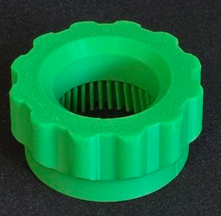
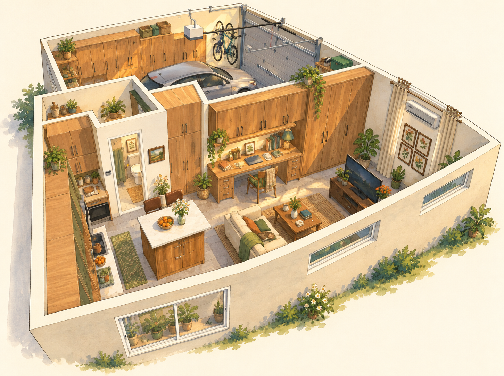
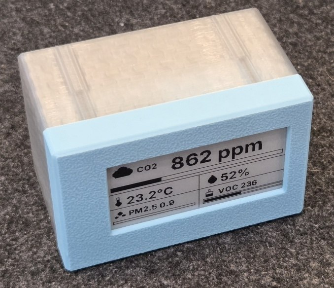

A personal project journal
Ideas into
real things.
Small fixes. New skills.
A collection of things I’ve made
and explored along the way.
The projects
01 — 04
3D printing / Everyday tools01
TwistAssist
A little extra grip for stubborn carton caps. A simple tool, refined through a few revisions.
Explore the project
Home Assistant / In progress02
Home Assistant Floorplan
A fresh start for this project. Details and progress updates will be added as it develops.
View the project
ESPHome / Air quality03
Air Quality Monitor
A custom ESPHome monitor with an at-a-glance display and a 3D-printed enclosure.
Explore the project
Home projects / Shade rebuild04
Lutron Shade Rebuild
Taking a shade apart and rebuilding it around the roller and fabric. The process, in 21 photos.
Explore the project